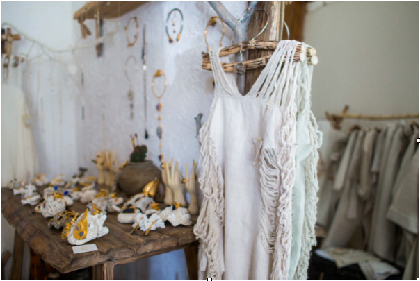
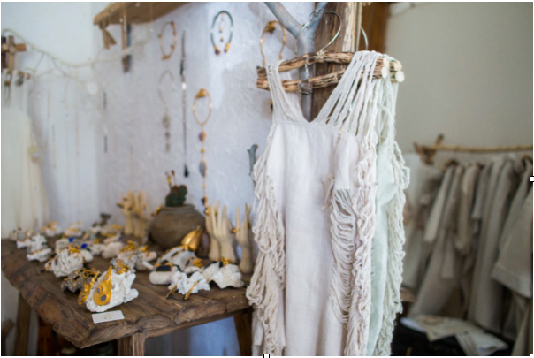
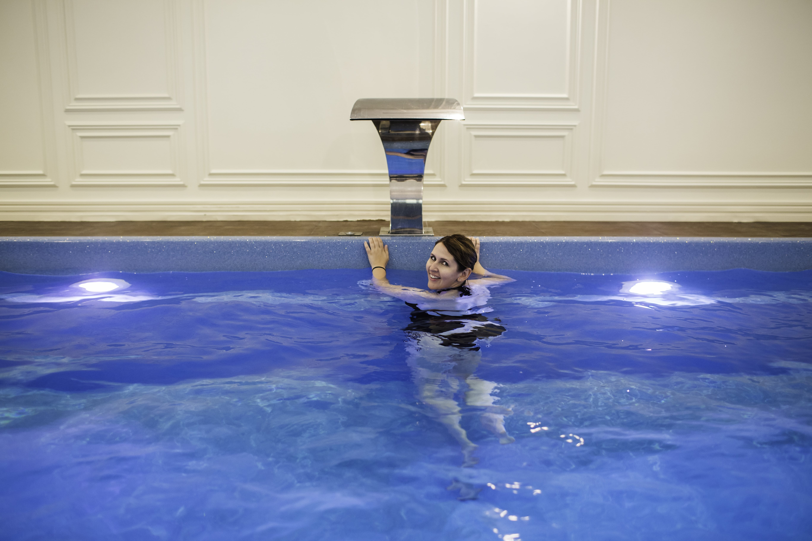
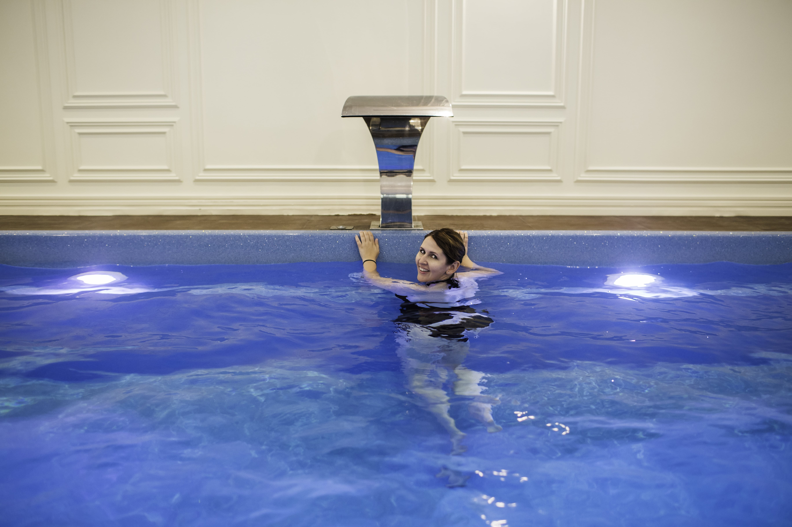

#DiscoveredByVogue: Бьюти-гид по Киеву
В совместном проекте VogueUA, Merсеdes-Benz и MasterCard редактора Vogue ездят по Украине и открывают самые интересные места. Алена Пономаренко проехала на smart по киевским спа и рассказывает, как это было.
Адрес:
ул.Жилянская, 59 (Дипломат хол)
Я очень люблю киевский OKO Spa. Все начиналось с уютного затемненного салона на тихой улице Дарвина, сегодня у него появилось продолжение – просторное, светлое, медитативное пространство на Жилянской. Здешнее спа-меню – обширное и разнообразное.
Можно прийти на тайский массаж, а можно провести здесь весь день – с любимым или с подружками. Для девичников тут устроена отдельная комната с несколькими татами, разделенными перегородками из полупрозрачного тюля, и общим пространством для чаепитий.
 

Следом перемерила наряды украинской марки Nomad, представленные в салоне. Они сшиты из старинного, тканого вручную полотна (его разыскивают по всей Украине), из волокон конопли или льна, и оформлены тоже вручную – но уже с учетом современной моды.
Рядом с одеждой расположился ювелирный корнер: необычные украшения, наполненные смыслом. Некоторые гармонизируют чакры и активируют нужные. Например, надеваешь на шею тонкую цепочку, от которой спускаются к талии длинные металлические нити с покачивающимися подвесками, - и, кажется, что меняются даже осанка и жесты.
 

Все процедуры в Око спа начинаются с того, что мастер предлагает понюхать ароматные смеси. Одни пахнут чистой ромашкой, другие – чувственной смесью, где явственно ощущается жасмин. В зависимости от того, какую выбирает клиент, мастер определяет текущее состояние его доши – вата, пита, капха. И уже исходя из этого проводит процедуру.
Мне омыли ноги в медном тазу, провели в полутемную комнату, уложили на кушетку, закололи волосы цветком – и мастер-тайка начала танец обволакивающих движений вокруг моего тела. Периодически было щекотно, периодически – очень интенсивно, но чаще я проваливалась в сон. Два часа пролетели незаметно.


Уже одевшись, я вспомнила, что выбежала из дому без наличных. Выручила платиновая Mastercard. Я расплатилась – и отправилась на Подол, в один из главных спа страны, Elixir Luxury Beauty.
Малышу smart пробки не страшны: он лавирует в потоке, как заряженный атом. А вдобавок – позволяет припарковаться там, где обычной машине нечего и мечтать.

В Fairmont Spa меня ждал настоящий luxury отдых, но я никак не могла оторваться от шкафов и полок с бьюти-скоровищами. Тут были ароматы, которые можно найти только в нишевых парфюмерных лавках, - например, Scent Bar, Costume National и Eutopie, средства по уходу Evidence de Beaute, Medic8 и Meder Beauty, и еще много разных средств, флакончиков, баночек и тюбиков, за которые бьютиголик продаст душу.
Адрес:
ул. Набережно-Крещатицкая, 1

Переодевшись в халат, я отправилась в хамам.
Чудо, если удастся попасть к Ирине – ее руки творят чудеса. В хамаме Ирина взбила пену в пышные кремовые облака и промассировала мне каждую косточку, каждую мышцу.
После хамама есть два способа продолжать день: отправиться спать – или побежать по делам. Я выбрала второе – и чтобы вернуться в обычное измерение, отправилась в бассейн. Бассейн огромный, с противотоком и гидромассажем. 15 минут – и чувствуешь, как энергия наполняет тело.
Единственное, потом жаль красивой прически. Но в Elixir мне предложили укладку – и за 15 минут превратили мой пучок в роскошную гриву. Мастер, правда, отметила, что из-за осветления мои волосы на кончиках суховаты и нуждаются в особом уходе. Вдобавок посоветовала наносить сухое масло не перед укладкой (так оно «поджаривается» на волосах), а после нее.


Проведя в Elixir несколько часов, я успела проголодаться. Попыталась прикинуть в уме, сколько времени у меня уйдет на нормальный обед (салат и суп) и уже готова была махнуть рукой. Но мне объяснили, что из Vogue Café, расположенного двумя этажами ниже, доставят еду в мгновение ока.
Так и случилось: прямо в салон вкатили сервировочный столик (никелированная крышка-купол, как в фильмах про Джеймса Бонда, прилагалась) – и можно было наслаждаться свежайшим гаспачо и салатом с киноа и авокадо.
Уходить из спа с бассейном сытой, со свежей укладкой – ощущение, прямо скажем, редкое. Но потрясающе приятное. С трудом сдержавшись, чтобы не обогатить свою парфюмерную полку очередной порцией ароматов, я расплатилась.
И, встряхивая локонами, покатила на smart дальше, не переставая посматривать в удивительно удобные панорамные боковые зеркала.
В IP Med Spa на Оболонской набережной я хожу с момента его открытия, то есть без малого два года. Тут отличные косметологи, эстетисты по телу, колористы. А вдобавок – вид на Днепр, который открывается из окон едва ли не каждого кабинета.

Адрес:
ул. Оболонская набережная, 1
В этот раз мне было интересно попробовать самый дорогой уход за волосами в моей жизни (один только шампунь стоит около трех тысяч гривен). Флаконы с янтарным содержимым так хороши, что украсят любую парфюмерную полку, а их ароматы с нотами уда и амбры напоминают о парижских пятизвездных отелях, где стены обиты шелком и везде царит полумрак.
Стилист по волосам Евгений вымыл мне волосы шампунем, затем нанес эликсир для кожи головы, который мягко растворяет отмершие клетки («Здоровые волосы растут только из здоровой кожи головы»). Если мы откроем окна, - думала я, - то аромат вырвется из салона и окутает набережную. Тем временем Евгений нанес мне на волосы по всей длине сыворотку, укутал шапочкой и усадил под «нимб» - специальное устройство, которое помогает раскрыть чешуйки волос и внедрить туда целебный состав на нужную глубину.
Уже через 25 минут можно было приступать к укладке. Никаких сложностей, просто аккуратно высушим волосы, - сказал мой мастер. Когда он закончил, у меня было чувство, что я нахожусь в центре невесомого ароматного облака. «Аромат пробудет с вами весь вечер – и всю ночь», - пообещал Евгений. А я подумала, что этот уход – идеальная альтернатива духам, который в летнюю жару звучат слишком громко.

Когда я протягивала свою Mastercard Platinum на стойке reception, мне казалось, что даже выпуклые буквы на ней слегка пахнут сложной удовой композицией. «Некоторые клиентки ходят к нам на восстановление волос каждую неделю», - рассказали мне в салоне. Думаю, моя карта тоже могла бы осилить такой график. Но в конце концов, есть дела и поважнее: в следующий раз нас ждет Одесса.
Фото: Kate Lang
Видео: Анна Бугакова